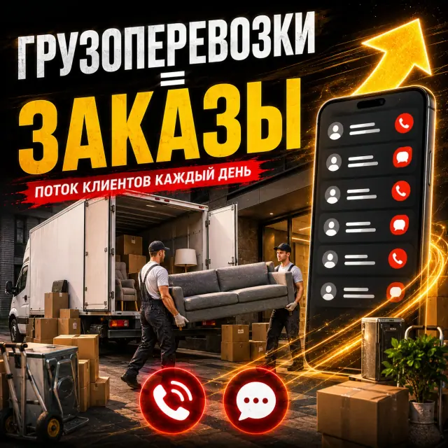

Заказы для грузоперевозок: что это и как начать?
Вы получаете: быстрые обращения, ясные цены, управляемый поток. Как начать: оставьте заявку на бесплатный аудит, я разберу ваш профиль, сайт или рекламу, скажу, что мешает получать заявки, и предложу формат работы. Ответ приходит в течение суток. Аудит бесплатный, даже если мы не будем работать вместе.
Как устроен спрос на перевозки?
- Клиент ищет машину срочно и выбирает по скорости ответа и понятной цене.
- Ниша разделена на много типов заказов: квартирный переезд, офисный, доставка и грузчики.
- Разные машины и тарифы: нужно ясно объяснять, что и по какой цене вы возите.
- Высокая конкуренция среди частников и компаний, доверие решает.
Что я делаю?
- Разделяю услугиОтдельные объявления под квартирный переезд, офисный, вывоз мусора и доставку.
- Показываю парк и ценыЯсные тарифы и фото машин, чтобы клиент сразу понимал, что заказывает.
- Настраиваю АвитоОформление профиля и объявлений под поиск по городу и типу перевозки.
- Подключаю ДиректРеклама по запросам «грузоперевозки», «заказать газель» и «квартирный переезд».
- Ускоряю ответыШаблоны и быстрая реакция: диспетчер отвечает за минуты, а не за часы.
Примеры оформления

Больше работ смотрите в полном портфолио.
Что получает бизнес
Что мешает получать заказы?
- Одно объявление на все типы перевозок.
- Нет цены или «договорная»: клиенты пролистывают такие объявления.
- Долгие ответы: клиент уже нашёл другую машину.
Частые вопросы: сколько стоит и как быстро результат?
Есть ли пример результата в грузоперевозках?
Да: в одном из моих кейсов по грузоперевозкам Авито принесло 630 обращений за месяц. Результат зависит от региона и ниши, поэтому в вашем случае цифры будут другими.
Что важнее для перевозок: Авито или реклама?
Авито даёт много быстрых обращений, реклама в Яндексе добавляет заказы из поиска. Лучше работать с обоими, соотношение определяю на аудите.
Нужен ли сайт с расчётом стоимости?
Он помогает клиенту сразу понять цену и упрощает обращение, но для старта часто достаточно Авито.
Смежные направления
Начните с бесплатного аудита
Я разберу ваш профиль, сайт или рекламу и скажу, что мешает получать заявки. Аудит бесплатный, даже если мы не будем работать вместе.
Оставить заявку на аудит